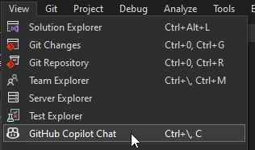
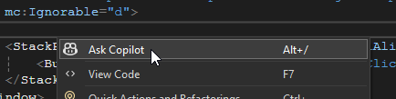
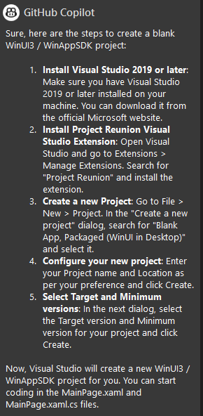
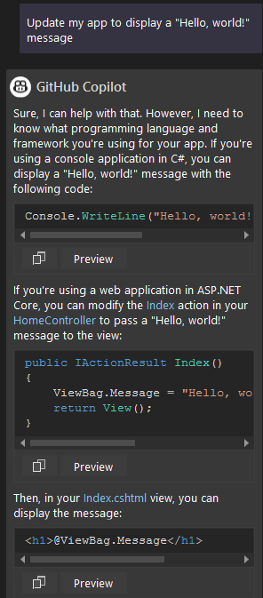
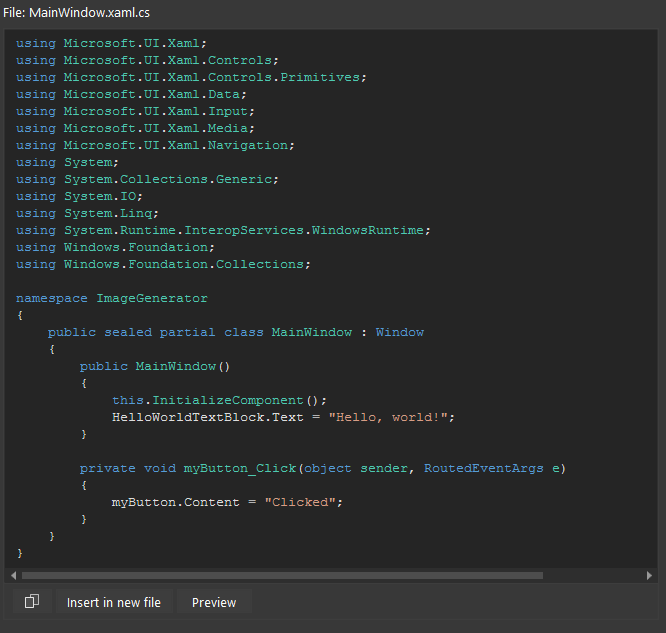
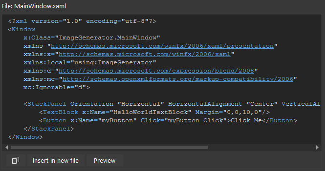
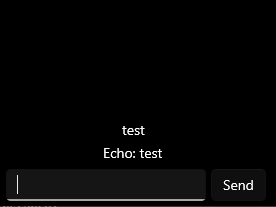

Streamline your WinUI 3 / Windows App SDK development workflow with GitHub Copilot Chat
This how-to is targeted at desktop application developers who want to streamline their WinUI 3 / Windows App SDK application development workflow with Github Copilot Chat in Visual Studio.
We'll start by using GitHub Copilot Chat to build a "Hello world" app with a single prompt, and then we'll demonstrate how GitHub Copilot Chat can be used to add a chat interface that displays responses from a mocked server-side component.
Prerequisites
- Visual Studio 2022 version 17.8 or later
- An active subscription to GitHub Copilot for Individuals or GitHub Copilot for Business associated with the GitHub account that you sign in to Visual Studio with.
- GitHub Copilot Chat in Visual Studio.
- If you're using Visual Studio version 17.10 or later, GitHub Copilot Chat is included in the built-in, unified GitHub Copilot extension available as a recommended component in the Visual Studio Installer. It is installed by default with all workloads, unless you choose to exclude it during installation.
- Familiarity with C#, WinUI 3, and Windows App SDK.
Prompting techniques
The goal of this how-to is to equip you with vocabulary and prompting techniques that yield the results you're looking for with minimal effort. There are two primary techniques: prompting through the chat window and prompting through inline chat.
Prompting through the Copilot Chat window
In Visual Studio, select View > GitHub Copilot Chat.

This opens the GitHub Copilot Chat pane on right side of the Visual Studio window, depending on your configuration. You can use this chat window to ask Copilot for help with your code. This technique is useful when you're working across multiple files and don't mind explicitly specifying the files that need to change, and it's the technique we'll focus on in this how-to.
Prompting through inline Copilot Chat
From any file's editor window, right click and select Ask Copilot to bring up the inline chat view of Copilot Chat in the editor itself.

This will reveal an inline chat window where you can prompt Copilot to assist you with the file you're currently working on. Use this when you're working within the context of a single file.
Create a new WinUI 3 project
Type the following into the Copilot Chat window:
Get me started with a blank WinUI 3 / WinAppSDK project
You should see instructions appear:

This highlights a limitation that you should be aware of: at the time of this writing, the Chat extension can't create a new project or file structure for you, but it can provide you with step-by-step instructions. Follow the instructions to create a new project.
Display a "Hello, world!" message
Once your new project is created, type the following into the Copilot Chat window:
Update my app to display a "Hello, world!" message
Copilot's response will likely indicate that it is unaware of your development context:

Without explicitly specifying context, the Copilot Chat window is effectively a convenient interface that lets you prompt the underlying LLM (Large Language Model) without including any additional context by default.
To address this, you can use slash commands and hash references to explicitly provide Copilot with relevant context. See Get better answers by setting the context for GitHub Copilot Chat in Visual Studio for details.
Type the following into the Chat window:
Update #MainWindow.xaml and #MainWindow.xaml.cs to display "Hello, world!" when the app starts. Directly modify the existing files. Do not explain yourself. Do not generate new files.
You should see Copilot generate the necessary code within code blocks labeled MainWindow.xaml and MainWindow.xaml.cs. These code blocks should each display two options: Insert in new file and Preview. Click Preview while your cursor is active in the target file to stage and accept the changes:


This highlights an important consideration: You must know the files that need to change, in order to instruct Copilot to modify them. We'll use this pattern throughout the rest of our development workflow.
This suggests that keeping your project structure simple and well-organized can help you work more efficiently with Copilot.
If you aren't sure what files need to change, you can ask Copilot Chat by using the #Solution hash reference:
What files should I change in my #Solution in order to achieve <desired outcome>?
Remove the button
Type the following into the Chat window:
Update #MainWindow.xaml and #MainWindow.xaml.cs to display ONLY "Hello, world!" when the app starts, removing extraneous buttons and their code-behind functionality as-needed. Directly modify the existing files. Do not explain yourself. Do not generate new files.
Accept the suggested changes. You should see the button removed from the UI and the corresponding code removed from the code-behind file. Run the application to verify that only the "Hello, world!" message is displayed:
Build the chat interface
Next, we'll build a simple chat interface that lets you enter text and generate mocked responses. Type the following into the Chat window:
Update #MainWindow.xaml and #MainWindow.xaml.cs to build a chat interface with the following layout and functionality, step by step:
1. A **horizontally centered input** at the bottom of the window
2. A **vertically scrolling list of messages and responses** directly above the input
3. A **ProgressBar** to indicate when the app is waiting for a response, directly above the input, below the list of messages and responses
4. The latest message should be visible at the bottom of the list, with older messages above it, eventually becoming hidden as the list grows
5. When I click the Send button, display the input text in a TextBlock, and update the ProgressBar to indicate that the app is waiting for a response. Mock the code that generates a response with a delay of 2 seconds, and then display a response that echoes the input text above the input.
6. Ensure that **TextBlock** text wraps to the next line when it reaches the edge of the window.
Remove extraneous code as-needed. Directly modify the existing files. Do not explain yourself. Do not generate new files. Ensure that every single numbered requirement is accounted for in the end result. Ensure that both the markup and code-behind files are updated to produce a fully functional chat interface that builds and meets the above-stated requirements. Take your time. Reveal only two code blocks representing the end result, one for each file.
This is an example of one-shot prompting, where you're providing all requirements in a single prompt. This can be useful when you have a clear idea of what you want to build and you want to see Copilot generate the code to meet those requirements, but it also increases the likelihood that Copilot will generate code that doesn't quite satisfy your requirements.
This highlights an important consideration: If you provide Copilot with precise requirements, it can generate the necessary code to meet those requirements. This can be a powerful way to leverage Copilot within your development workflow, but it requires you to construct your prompt using technical vocabulary that precisely defines the requirements of the feature you're building.
At the time of this writing, the above input generated the below output:
using Microsoft.UI.Xaml;
using Microsoft.UI.Xaml.Controls;
using System;
using System.Collections.ObjectModel;
using System.Threading.Tasks;
namespace ImageGenerator
{
public sealed partial class MainWindow : Window
{
public ObservableCollection<string> Messages { get; } = new ObservableCollection<string>();
public MainWindow()
{
this.InitializeComponent();
MessageTextBox.KeyDown += (sender, e) =>
{
if (e.Key == Windows.System.VirtualKey.Enter && !string.IsNullOrWhiteSpace(MessageTextBox.Text))
{
SendButton_Click(sender, e);
}
};
}
private async void SendButton_Click(object sender, RoutedEventArgs e)
{
Messages.Add(MessageTextBox.Text);
ProgressBar.Visibility = Visibility.Visible;
MessageTextBox.Text = string.Empty;
await Task.Delay(2000);
Messages.Add($"Echo: {Messages[^1]}");
ProgressBar.Visibility = Visibility.Collapsed;
ScrollToBottom(); // Scroll to the end after adding a message
}
private void ScrollToBottom()
{
var scrollViewer = MessagesScrollViewer;
if (scrollViewer != null)
{
scrollViewer.ChangeView(0.0f, scrollViewer.ExtentHeight, 1.0f); // Scroll to the bottom
}
}
}
}
<Window
x:Class="ImageGenerator.MainWindow"
xmlns="http://schemas.microsoft.com/winfx/2006/xaml/presentation"
xmlns:x="http://schemas.microsoft.com/winfx/2006/xaml"
xmlns:d="http://schemas.microsoft.com/expression/blend/2008"
xmlns:mc="http://schemas.openxmlformats.org/markup-compatibility/2006"
mc:Ignorable="d">
<Grid>
<Grid.RowDefinitions>
<RowDefinition Height="*"/>
<RowDefinition Height="Auto"/>
</Grid.RowDefinitions>
<!-- Message viewer area -->
<ScrollViewer Grid.Row="0" VerticalScrollBarVisibility="Auto" x:Name="MessagesScrollViewer">
<StackPanel VerticalAlignment="Bottom" HorizontalAlignment="Center">
<ItemsControl ItemsSource="{x:Bind Messages, Mode=OneWay}">
<ItemsControl.ItemTemplate>
<DataTemplate>
<TextBlock Text="{Binding}" TextWrapping="Wrap" HorizontalAlignment="Center" Margin="0,2" />
</DataTemplate>
</ItemsControl.ItemTemplate>
</ItemsControl>
</StackPanel>
</ScrollViewer>
<!-- Input area -->
<StackPanel Grid.Row="1" VerticalAlignment="Bottom" HorizontalAlignment="Stretch">
<ProgressBar x:Name="ProgressBar" Height="5" HorizontalAlignment="Stretch" Visibility="Collapsed" Margin="0,5,0,0" />
<StackPanel Orientation="Horizontal" HorizontalAlignment="Center">
<TextBox x:Name="MessageTextBox" MinWidth="200" Margin="5" AcceptsReturn="False" />
<Button x:Name="SendButton" Content="Send" Click="SendButton_Click" />
</StackPanel>
</StackPanel>
</Grid>
</Window>
Which yielded the following UI:

Fix and iterate upon the generated code
If the output that you receive from Copilot doesn't satisfy the stated requirements, one option is to reiterate your original instructions with more precise instructions, and instruct Copilot to "Continue updating" the code to meet the unmet requirements:
Continue updating #MainWindow.xaml and #MainWindow.xaml.cs to build a chat interface with the following layout and functionality, step by step:
1. A **horizontally centered input** at the bottom of the window // done
2. A **vertically scrolling list of messages and responses** directly above the input // partially done - the list is displayed, but it doesn't scroll
3. A **ProgressBar** to indicate when the app is waiting for a response, directly above the input, below the list of messages and responses // done
4. The latest message should be visible at the bottom of the list, with older messages above it, eventually becoming hidden as the list grows
5. When I click the Send button, display the input text in a TextBlock, and update the ProgressBar to indicate that the app is waiting for a response. Mock the code that generates a response with a delay of 2 seconds, and then display a response that echoes the input text above the input.
6. Ensure that **TextBlock** text wraps to the next line when it reaches the edge of the window.
Remove extraneous code as-needed. Directly modify the existing files. Do not explain yourself. Do not generate new files. Ensure that every single numbered requirement is accounted for in the end result. Ensure that both the markup and code-behind files are updated to produce a fully functional chat interface that builds and meets the above-stated requirements. Take your time. Reveal only two code blocks representing the end result, one for each file.
Alternatively, you can use multi-shot prompting to break your problem down into smaller requirements, and then work on one at a time, incrementally building towards your desired outcome. This approach can be useful when you're not sure how to articulate your requirements with a high degree of technical precision, or when Copilot is struggling to generate the code you want.
Recap
In this how-to, we:
- Demonstrated how to streamline your WinUI 3 / Windows App SDK development workflow with GitHub Copilot Chat in Visual Studio
- Prompted Copilot to generate code that meets your requirements
- Highlighted the importance of providing Copilot with precise requirements to generate the code you want
- Identified a variety of prompting techniques and use-cases for each